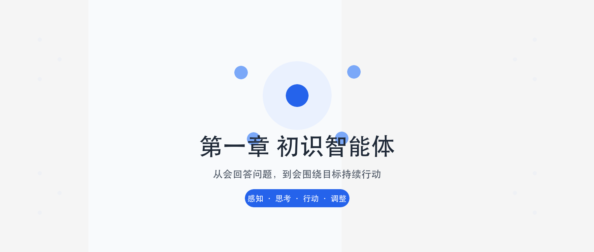
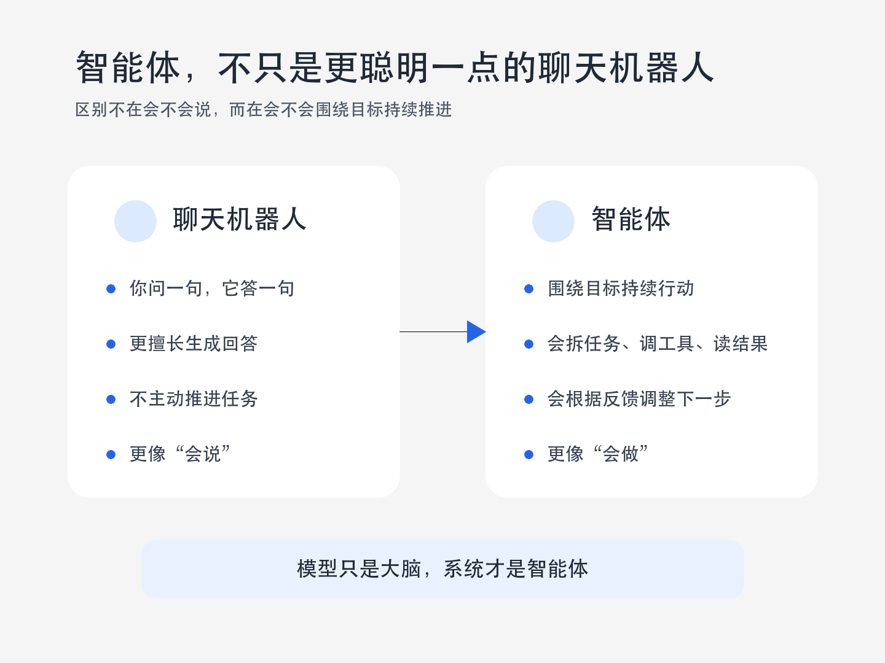
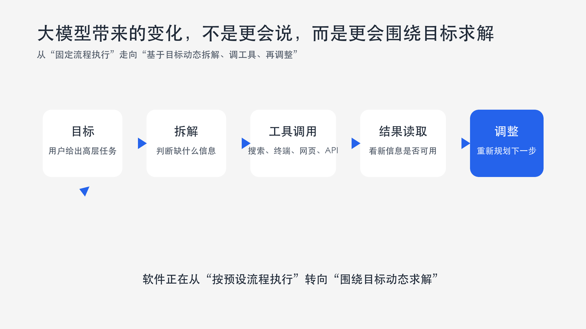

初识智能体
很多人第一次听到「智能体」，会以为它只是「更聪明的聊天机器人」。这个理解只摸到了表面——智能体更像：你交给它一个目标，它会想办法一步步把事情推进下去。

本章学习目标
分清智能体与普通程序、普通聊天模型的差别
弄懂感知→思考→行动循环如何运转
理解为何今天谈 Agent，而不只谈大模型
看懂最小旅行助手的 Thought-Action-Observation
判断何时用 Workflow、何时用 Agent、如何混合
这一章你要走完哪些站？
先搭地图，再堆积木。后面 ReAct、工具调用、记忆、RAG、多智能体，都站在这一章地基上。
- 智能体和普通程序、普通聊天模型到底差在哪？
- 一个智能体是靠什么机制运转起来的？
- 为什么今天大家都在谈 Agent，而不是只谈大模型？
聊天机器人 vs 智能体
聊天更像「你问一句，我答一句」；智能体更像「你给目标，它会看、会想、会做，还会根据结果继续调整」。
单轮问答 / 聊天
- 输入一段话，输出一段话
- 通常不主动调外部工具
- 缺少「做完再看结果」的多轮闭环
- 强项是理解与生成语言
智能体 / Agent
- 围绕目标持续推进
- 感知环境、调用工具、改变状态
- 行动后接收观察，再决策下一步
- 模型是大脑，系统才是身体

开始前先丢掉五个误解
误解 1：有了大模型就等于有了智能体
大模型提供推理与语言能力；智能体还要工具、状态、循环、终止条件与护栏。缺了这些，仍只是「会说话」。
误解 2：智能体 = 自动化脚本
脚本通常把路径写死；智能体在边界内自主决定下一步。真实系统常混合二者，概念上不能画等号。
误解 3：自主性越高越好
自主↑ → 能力↑，同时风险、成本、不可复现性也↑。成熟设计追求「刚刚好的自主性」。
误解 4：智能体是 LLM 时代才有的新词
传统 AI 已研究智能体数十年。现代 LLM Agent 是老思想在新技术上的重组。
误解 5：提示词写好就能稳定上线
提示词很重要，但解析器、重试、最大轮次、工具错误处理同样关键——工程护栏决定可用性。
什么是智能体？先记一句
智能体不是一个只会回答问题的模型，而是一个会围绕目标持续行动的系统。
为什么强调「系统」而不是「模型」？因为模型只是大脑。智能体还需要眼睛、耳朵、手脚，甚至短期记忆、任务进度、规则边界和反馈机制。
如果只能生成看起来聪明的话，但不能感知环境、不能调用工具、不能根据结果继续推进——更像「会说话」，还谈不上「会做事」。

环境：它到底活在什么世界里？
环境是智能体所处的外部世界。定义不清，后面所有设计都会漂。
物理环境例子
- 自动驾驶：动态道路、行人、天气、交通信号、其他车辆
- 仓储机器人：货架布局、障碍物、电量、任务单
数字环境例子
- 交易算法：价格、订单簿、新闻、监管规则
- 代码助手：代码库、终端、测试日志、你的需求
- 旅行助手：天气 API、机票/酒店库存、点评站点、用户对话
传感器：它怎么「看见」世界？
传感器是获取信息的通道。摄像头、麦克风、雷达是物理延伸；对软件智能体，API 返回的数据流同样是感知能力的延伸。
- 用户输入：自然语言指令、按钮点击、上传文件
- API / HTTP：天气、搜索、数据库查询结果
- 系统反馈：命令退出码、日志、页面 DOM
- Observation：上一轮工具执行后包装成文本的结果
传感器决定信息上限。多数数字环境是部分可观察的——查航班不可能一次看到全网所有座位。智能体必须在信息不完整时仍能决策，并靠记忆与探索补洞。
执行器：它怎么改变世界？
获取信息后，智能体通过执行器对环境施加影响，改变环境状态。
物理执行器
- 机械臂、夹爪
- 方向盘、油门、刹车
- 轮子、电机、喷头
虚拟执行器
- 执行一段代码
- 调用一个服务 / API
- 写文件、发消息、改数据库
- 触发预订、下单、创建工单
自主性：真正赋予「智能」的关键
智能体并非只是被动响应外部刺激或严格执行预设指令。它能够基于感知和内部状态进行独立决策，以达成设计目标。这种从感知到行动的闭环，构成所有智能体行为的基础。
四要素概念卡
点击翻转。记法：看见了什么 · 能动什么 · 想去哪里 · 能不能自己决定怎么走。
环境
环境
智能体面对的外部世界。自动驾驶面对道路；代码助手面对代码库与测试日志。
传感器
传感器
获取信息的通道。软件智能体常用 API、网页、数据库、用户输入。
执行器
执行器
影响世界的方式：调函数、改文件、发消息、执行命令。
自主性
自主性
能根据当前情况自己决定下一步查什么、做什么、改什么。
用四要素快速判断
1. 计算器 App：输入表达式返回结果。
2. 扫地机器人边扫边建图，低电量自动回充。
3. 哪句最接近智能体核心？
传统视角下的智能体
智能体不是 LLM 火了之后才出现的。研究者已探索数十年——从简单反应走向复杂决策。
演进可压缩为一句：从「只会当场反应」→「会记忆、会规划、会权衡、会学习」。
反射
条件→动作，只看现在
基于模型
内部世界模型，有初级记忆
基于目标
主动规划通向目标的行动
基于效用
多目标权衡，最大化满意度
学习型
从经验改进策略（如 RL）
简单反射智能体（Simple Reflex Agent）
决策核心由工程师明确设计的「条件-动作」规则构成。经典例子：自动恒温器——若室温高于设定值，则启动制冷。

- 完全依赖当前感知
- 不具备记忆或预测能力
- 像数字化的本能：可靠且高效
- 无法应对需要理解上下文的复杂任务
基于模型的反射智能体
这类智能体拥有内部的世界模型（World Model），用于追踪和理解环境中那些无法被直接感知的方面。它试图回答：「世界现在是什么样子的？」
例子：隧道中的自动驾驶
即便摄像头暂时无法感知前方车辆，内部模型仍会维持对那辆车存在、速度和预估位置的判断。内部模型让智能体拥有初级「记忆」，决策基于更连贯、完整的世界状态理解，而不只是瞬时感知。
- 多了：对不可见状态的估计与追踪
- 仍偏反应式：规则可能仍是条件→动作，但条件来自内部状态
- 局限：还不一定有明确长期目标与规划搜索
基于目标的智能体（Goal-Based Agent）
行为不再只是被动反应，而是主动、有预见地选择能导向某个特定未来状态的行动。核心问题：「我应该做什么才能达成目标？」
例子：GPS 导航
目标是到达公司。智能体基于地图数据（世界模型），通过搜索算法（如 A*）规划（Planning）出一条最优路径。核心能力体现在对未来的考量与规划上。
反射式问「现在该不该动」；目标式问「怎样到达想要的未来」。它开始做前瞻与路径搜索。
基于效用的智能体（Utility-Based Agent）
现实世界的目标往往不是单一的。我们不仅希望到达公司，还希望时间最短、路程最省油并且避开拥堵。当多个目标需要权衡时，效用智能体便随之出现。
- 为每一个可能的世界状态赋予一个效用值（满意度高低）
- 核心目标不再是简单达成某个状态，而是最大化期望效用
- 它问：「哪种行为能为我带来最满意的结果？」
学习型智能体与强化学习
前面几类的核心决策逻辑（规则、模型、效用函数）仍依赖人类设计师的先验知识。学习型智能体的核心思想是：能否通过与环境互动自主学习？
强化学习（Reinforcement Learning, RL）是最具代表性的路径。学习型智能体包含：
- 性能元件：前面讨论的各类智能体（负责实际决策与行动）
- 学习元件：观察行动结果，不断修正性能元件的决策策略
AlphaGo Zero 的启示
想象学习下棋的 AI：开始可能随机落子，赢了获得正向奖励。通过大量自我对弈，学习元件发现哪些棋路更可能导向胜利。AlphaGo Zero 在围棋中通过 RL 发现了许多超越人类既有知识的有效策略——这是里程碑式成就。
闪卡：传统智能体五阶
先想答案，再点卡片揭示。用左右按钮切换题目。
自测：传统智能体演进
1. 恒温器「太热就制冷」最接近？
2. GPS 用 A* 规划去公司的路线，最接近？
3. AlphaGo Zero 自我对弈改进策略，体现？
大语言模型驱动的新范式
以前很多系统要求规则写得很清楚。现实任务却常常是模糊、开放、充满上下文的：
- 「帮我规划一趟厦门三日游。」
- 「帮我看看这段代码为什么老报错。」
- 「帮我整理这周最重要的 AI 新闻，并按重要程度排序。」
难点：很难提前把全部规则写死。信息太杂、表达不标准、推进中还会冒出新情况。
以 GPT（Generative Pre-trained Transformer） 为代表的大语言模型，改变的正是这件事：不是工程师把每条规则写进去，而是先在大量数据上学会语言理解、知识关联、模式概括和任务分解。面对高层目标时，能先理解需求，再规划步骤，再按需要调工具。
传统智能体 vs LLM 驱动智能体
转变可从核心引擎、知识来源、交互方式等多个维度对比。简言之：传统能力源于工程师显式编程与知识构建，行为确定且有边界；LLM 智能体通过海量数据预训练，获得隐式世界模型与涌现能力，更灵活、更通用地应对复杂任务。

传统智能体
- 能力来自显式编程与知识构建
- 行为相对确定、边界清晰
- 适合规则清楚、变化有限的场景
- 对模糊自然语言目标支持弱
LLM 驱动智能体
- 预训练获得隐式世界模型与涌现能力
- 更灵活、更通用地应对开放任务
- 可直接理解高层、模糊的自然语言指令
- 可规划、调工具、根据反馈动态修正
规划与推理：拆解模糊目标
LLM 出现之前，规划旅行通常意味着用户在多个专用应用（天气、地图、预订）之间手动切换，自己扮演信息整合与决策角色。LLM 智能体则能把流程整合起来。
当收到「规划一次厦门之旅」这样的模糊指令时，它首先会把高层目标分解为逻辑子任务，例如：
这是一个内在的、由模型驱动的规划过程——不是人把流程图画死，而是模型根据上下文生成下一步合理拆解。
工具使用与动态修正
工具使用（Tool Use）
执行规划时，智能体识别到信息缺口，会主动调用外部工具补全。例如调用天气查询接口获取实时天气；若预报有雨，后续规划会倾向推荐室内活动。
动态修正（Dynamic Correction）
交互中，用户反馈（如「这家酒店超出预算」）被视为新约束。智能体据此调整后续行动，重新搜索并推荐符合新要求的选项。「查天气 → 调行程 → 订酒店」展现了根据上下文动态修正自身行为的能力。
我们正从开发专用自动化工具，转向构建能自主解决问题的系统。核心不再只是编写代码，而是引导一个通用「大脑」去规划、行动和学习。
自测：定义与新范式
1. LLM 智能体相对传统智能体，最大变化更接近？
2. 「预报有雨 → 改推室内景点」主要体现？
智能体的类型：为什么要分类？
以后遇到一个系统，不能只说「它是 Agent」——太粗了。更有工程价值的是继续判断：偏即时反应还是偏规划？规则系统还是数据驱动？单层还是混合？
- 基于内部决策架构——脑子有多复杂（反射→模型→目标→效用→学习）
- 基于时间与反应性——快反应 vs 慢规划 vs 混合
- 基于知识表示——符号 / 亚符号 / 神经符号
分类不是为了考试，而是设计时少走弯路：任务简单时简单反射可能最稳；任务复杂时才需要规划、效用与学习。
基于内部决策架构的分类
这一维度依据智能体内部决策架构的复杂程度，在《Artificial Intelligence: A Modern Approach》中系统提出。传统智能体演进路径本身就构成最经典的分类阶梯。
- 反应式 / 简单反射：看到什么立刻做什么
- 模型式：脑中有简化地图，不再只看眼前
- 基于目标：知道自己到底想去哪
- 基于效用：不只想「到」，还想「更优地到」
- 学习能力：可赋予上述所有类型的元能力，使其通过经验自我改进
反应式智能体（Reactive Agents）

对环境刺激做出近乎即时的响应，决策延迟极低。通常遵循从感知到行动的直接映射，不进行或极少进行未来规划。简单反射与基于模型的智能体都属于此类别。
- 优势：速度快、计算开销低——动态环境中至关重要
- 例子：车辆安全气囊须在碰撞毫秒内反应；高频交易捕捉稍纵即逝的机会
- 代价：「短视」——缺乏长远规划，易陷入局部最优，难完成多步骤协调任务
规划式 / 审议式智能体（Deliberative）
行动前会进行复杂思考和规划。不会立即对感知做反应，而是先利用内部世界模型，系统探索未来可能性，评估不同行动序列后果，以期找到达成目标的最佳路径。基于目标与基于效用的智能体是典型规划式智能体。
优势与代价
- 优势：决策有战略性与远见；适合商业计划、长途旅行等复杂任务
- 代价：时间与计算成本高昂；环境瞬息万变时，想完时最佳时机可能已过
混合式智能体（Hybrid Agents）
现实任务往往既需即时反应，也需长远规划。例如智能旅行助手：要根据「这家酒店太贵了」快速调整（反应性），又要规划数天完整方案（规划性）。
经典分层设计
底层：快速反应模块，处理紧急情况与基本动作；高层：审慎规划模块，制定长远目标。
现代 LLM 的灵活混合
通常在「思考-行动-观察」循环中运作：
- 规划（Reasoning）：「思考」阶段分析状况、规划下一步——审议过程
- 反应（Acting & Observing）：与工具/环境交互并立即获反馈——反应过程
把宏大长期任务，分解为一系列「规划-反应」微循环：既能灵活应对即时变化，又能通过连贯步骤完成长期目标。
符号主义 AI（Symbolic AI）
这是更根本的分类维度：智能体用以决策的知识，究竟以何种形式存于其「思想」之中？这是 AI 领域半个多世纪辩论的核心。
符号主义常被称为传统人工智能，核心信念：智能源于对符号的逻辑操作。符号是人类可读实体（词语、概念），操作遵循严格逻辑规则。
- 优势：透明、可解释；推理步骤可完整追溯——金融、医疗等高风险领域至关重要
- 阿喀琉斯之踵：脆弱性——依赖完备规则体系；现实充满模糊与例外，未覆盖的新情况可导致失灵（知识获取瓶颈）
亚符号主义 AI（Sub-symbolic AI）
或称连接主义：知识并非显式规则，而是内隐地分布在大量神经元组成的复杂网络中，是从海量数据中学到的统计模式。神经网络与深度学习是其代表。
- 强大之处：模式识别能力、对噪声数据的鲁棒性；轻松处理图像、声音等非结构化数据
- 问题：通常被视为黑箱（Black Box）——能认出猫却难解释「为什么」；纯逻辑推理表现不佳；有时产生看似合理却事实错误的幻觉
神经符号主义 + 系统 1 / 系统 2
为克服两范式局限，「大和解」思想兴起：神经符号主义旨在融合优点——既能像神经网络从数据学习，又能像符号系统逻辑推理，弥合感知与认知、直觉与理性的鸿沟。

卡尼曼《思考，快与慢》的双系统理论提供绝佳类比：
- 系统 1：快速、凭直觉、并行——类似亚符号强大的模式识别
- 系统 2：缓慢、有条理、基于逻辑——恰如符号主义推理
速度 vs 规划深度（点击翻转）
反应式
反应式
快、延迟低、开销小。气囊、实时告警、部分高频交易依赖它。代价：短视，不善长远多步规划。
规划式
规划式
先想局面与路径后果再行动，像下棋。适合长期复杂任务。代价：耗时耗算力，环境变得太快可能错过时机。
混合式
混合式
低层快响应，高层长远规划。现代 LLM Agent 常拆成许多小循环：思考→行动→观察→再思考。
自测：三维分类
1. 安全气囊毫秒级弹出，主要偏？
2. 「规则库可追溯为何拒贷」更贴近？
3. LLM 吐出计划与 API 调用，可理解为？
智能体到底怎么运转？
上一节回答「是什么」。这一节回答更落地的问题：它怎么转起来？
很多人停在概念层：好像会调工具、会拆任务。但一追问「具体怎么一步步转」，脑中只剩模糊印象。其实可以讲清楚——先看环境（PEAS），再看循环（Agent Loop），再看接口（Thought-Action-Observation）。
任务环境：先看它在什么世界里干活
想理解智能体，最该先看的不是用了哪个模型，而是：它到底在什么环境里工作。
PEAS 模型逼你把系统边界想清楚——很多 Agent 不稳，不是模型不够强，而是没定义清楚成功标准、能看到什么、能动什么。
Performance 性能度量
怎样才算做得好？行程合理、预算内、用户满意度……
Environment 环境
身处什么世界？天气、机票、酒店、点评与用户对话
Actuators 执行器
能做什么？查 API、发消息、生成行程、触发预订
Sensors 传感器
能获取什么？用户输入、API 返回、搜索结果

把旅行助手塞进 PEAS
P · 性能度量怎么写才有用？
不要只写「用户满意」。尽量可观察：行程是否覆盖必去点、是否超预算、改签次数、用户是否接受推荐、完成任务轮数/成本等。没有 P，你无法判断 Agent「变强了还是变飘了」。
E / A / S 对齐检查
- 若 E 包含「实时票价」，S 就必须能读到票价接口
- 若 A 包含「下单」，就要考虑权限、确认与回滚
- A 能做但 S 看不到结果 → 闭环断裂
部分可观察：永远只看到一块拼图
实践中，LLM 智能体所处的数字环境展现出若干复杂特性，直接影响设计。
首先，环境通常是部分可观察的。旅行助手查询航班时，无法一次性获取所有航空公司的全部实时座位信息。它只能通过调用航班预订 API，看到该 API 返回的部分数据。
- 必须具备记忆（记住已查询过的航线）
- 必须具备探索（尝试不同查询日期/航司）
- 决策永远在「信息不完整」条件下进行——别假设一次调用就看清全世界
随机性、多智能体、序贯与动态
确定性 vs 随机性
行动结果并非总是确定。旅行助手任务环境是典型随机性环境：两次相邻搜索，机票价格和余票数量都可能不同。智能体必须处理不确定性、监控变化并及时决策。
多智能体环境
环境中可能存在其他行动者。其他用户的预订、自动化脚本、航司动态调价系统，都是其他「智能体」。它们的行动（订走最后一张特价票）会直接改变状态——要求更快响应与更稳策略。
序贯 + 动态
序贯：当前动作影响未来；动态：环境自身可能在智能体决策时变化。因此「感知-思考-行动-观察」循环必须能快速、灵活地适应持续变化的世界。
智能体循环（Agent Loop）
智能体并非一次性完成任务，而是通过持续循环与环境交互。这个核心机制构成自主行为的基础。往后学 ReAct、Function Calling、Planning、Memory、Multi-Agent，本质上都还在这个循环上加东西。

感知（Perception）：循环的起点
智能体通过传感器（例如 API 监听端口、用户输入接口）接收来自环境的输入信息。这些信息即观察（Observation），既可以是用户的初始指令，也可以是上一步行动所导致的环境状态变化反馈。
- 第 0 轮：常是用户目标（「查北京天气并推荐景点」）
- 后续轮：常是工具返回包装后的 Observation 文本
- 也可能是错误信息——好的系统把错误也当可观察信号
思考（Thought）：规划 + 工具选择
接收观察后进入核心决策。对 LLM 智能体，「思考」常由大模型驱动，可细分为：
规划 Planning
- 更新对任务与环境的理解
- 制定或调整行动计划
- 把复杂目标分解为子任务
- 问：离目标还有多远？下一步最合理的子任务是什么？
工具选择 Tool Selection
- 从工具库选最适合下一步的工具
- 确定调用所需参数
- 问：该用哪个工具？参数怎么填？
- 或决定：信息够了，该 Finish
行动 → 环境变化 → 新观察
决策完成后，智能体通过执行器执行具体行动——通常表现为调用选定工具（代码解释器、搜索引擎 API 等），对环境施加影响，意图改变状态。
行动会引起环境的状态变化（State Change），环境随即产生新的观察（Observation）作为结果反馈。新观察在下一轮被感知系统捕获，形成持续的「感知-思考-行动-观察」闭环。智能体通过不断重复这一循环，从初始状态向目标状态演进。
- 先意识到缺少天气信息
- 调天气工具
- 拿到「晴天」
- 再据「晴天」调景点推荐
- 最后合成完整回答——一轮一轮推进，而非一次说完
点着看：一轮轮怎么推进
以「查北京天气再推荐景点」为例，点击步骤查看说明。
① 感知与思考
先意识到：还缺少天气信息，不能凭空推荐。下一步应调用天气工具。
模型怎么和外部世界对接？
理论上说「感知-思考-行动」很顺，但落到工程必须回答：模型到底怎么和外部世界对接？
总不能让模型自由发挥一大段自然语言，然后程序员靠猜测判断它是想调工具还是已给最终答案——那样系统会非常脆弱。
因此需要一套明确的交互协议（Interaction Protocol）规范与环境的信息交换。在许多现代框架中，协议体现在对每次输出的结构化定义上：输出不再是单一自然语言回复，而是遵循特定格式的文本，明确展示内部推理与最终决策。
TAO：把语言接到执行
- Thought（思考）：内部决策「快照」——分析情境、回顾观察、自我反思与问题分解，规划下一步
- Action（行动）：基于思考后对环境施加的具体操作，通常以函数调用形式表示
Action 构成对外部世界的指令。外部解析器（Parser）捕捉指令并调用相应函数。
工具返回原始数据（常为 JSON）后，感知系统将其处理封装为简洁自然语言，即 Observation：
自测：构成与运行
1. PEAS 中的 P 主要回答？
2. 机票五分钟后涨价，主要体现环境的？
3. Thought-Action-Observation 的核心作用？
5 分钟实现第一个智能体
理论知识重要，最好的学习是亲手实践。目标：构建能处理分步任务的智能旅行助手。
用户任务：「你好，请帮我查询一下今天北京的天气，然后根据天气推荐一个合适的旅游景点。」
智能体必须先调用天气工具，把观察作为下一步依据；再调用景点推荐工具，得出最终建议。
准备工作：先接上外部世界
为从 Python 访问网络 API，需要：
requests：最流行易用的 HTTP 库tavily-python：AI 搜索 API 客户端，获取实时网络搜索（可在 tavily.com 注册获取 API）openai：调用兼容 OpenAI 接口的大语言模型服务
指令模板：智能体的「说明书」
驱动真实 LLM 的关键在于提示工程（Prompt Engineering）。指令模板告诉 LLM：扮演什么角色、拥有哪些工具、如何格式化思考和行动。它作为 system_prompt 传递给 LLM。
不是随便写「你是旅行助手」就够。还要告诉它：有哪些工具、每次输出长什么样、何时继续、何时结束。
这段 Prompt 到底干了什么？
从工程角度看，system prompt 干了三件非常重要的事：
- 限定角色——避免模型跑偏成闲聊或无关助手
- 暴露工具——让模型知道自己有哪些手段可用
- 强制输出格式——方便后续程序用正则/解析器接住
三件事少任何一件，系统稳定性都会明显下降。
- 「每次只输出一对 Thought-Action」——防止模型一次吐多步导致解析混乱
- Finish 格式——给循环一个明确出口
- 工具签名写清参数名——降低乱填参数概率
get_weather：查询真实天气
使用免费服务 wttr.in，以 JSON 返回指定城市天气。读函数时重点看三件事：如何发请求、如何提取关键字段、如何把机器数据整理成模型易懂的自然语言。
get_attraction：按天气搜景点
根据城市和天气，用 Tavily Search API 搜索并返回优化后的景点推荐。注意：它接收的不是「城市」一个参数，而是「城市 + 天气」——把前一轮结果带进下一轮，这就是多步任务雏形。
工具挂进同一张表后，主循环可变通用：模型输出工具名，系统按名查找执行。
OpenAICompatibleClient：模型适配层
许多 LLM 服务商（OpenAI、Azure、Ollama、vLLM 等）遵循与 OpenAI API 相似的接口规范。我们实现通用客户端，连接到任何兼容服务。
实例化需要：API_KEY、BASE_URL、MODEL_ID。业务循环不关心底层是哪家——只关心「给提示词，能否返回输出」。这种封装便于换模型、做 AB、接本地部署。
执行行动循环：最小 Agent 怎么跑
读代码时一直问自己四个问题：① 上下文怎么累计？② 模型输出后怎么解析？③ 工具怎么被真正执行？④ 结果怎么回流？
prompt_history= 短期工作记忆- 正则截出 Thought+Action，并解析工具名与参数
- Finish 是出口；工具结果包装成 Observation 回流
为什么要最大轮次和格式校验？
for i in range(5) 的意义
真实模型可能跑偏、重复尝试、或在某状态兜圈子。不给上限，系统可能无限循环——烧钱、占资源、永远不交付。
输出截断与格式校验
模型再聪明也不保证每次按格式输出。Agent 工程现实：你不能假设模型永远听话，必须加护栏。解析器、校验器、重试、fallback 不是多余代码，而是让原型变成可用系统的关键部分。
三轮跑通：四个核心能力
循环 1 · 任务分解
没有急着直接给答案，先意识到缺少关键信息。
循环 2 · 上下文承接 + 工具调用
把上一轮天气结果作为条件继续推进。
循环 3 · 结果合成与结束
判断信息已够，收束成最终回答——不只会用工具，还会决定何时停止。
这个小案例已经包含什么？
任务分解——先查天气再荐景点，而不是一步空想
工具调用——真正执行 get_weather / get_attraction
上下文理解——weather 参数来自上一轮 Observation
结果合成——Finish 时整合天气与景点给人可读答案
闪卡：Loop 与工程四层
自测：动手案例
1. system prompt 最不该缺少的是？
2. get_attraction(city, weather) 为何带 weather？
3. 没有最大循环次数，最可能？
不是所有软件都该做成 Agent
学到这里容易踩坑：智能体概念很吸引人，看上去很「高级」，于是以为系统越自主越先进。真实工程讲究的是稳定、合适、划算。
基于智能体在任务中的角色和自主性程度，协作模式主要分两种：① 作为高效工具，深度融入工作流；② 作为自主协作者，与其他智能体协作完成复杂目标。然后必须讲清 Workflow 与 Agent 的边界。
- 1.4.1 作为开发者工具（Copilot / Cursor 等）
- 1.4.2 作为自主协作者（CrewAI / MetaGPT / LangGraph 等）
- 1.4.3 Workflow vs Agent
作为开发者工具的智能体
在这种模式下，智能体被深度集成到开发者工作流中，增强而非取代开发者。通过自动化繁琐重复任务，让人更专注创造性核心工作。人机协同提升效率与质量。
- 帮你补全代码、解释报错、查 API 文档
- 生成测试样例、重构重复逻辑
- 在大型代码库里定位问题
几款典型 AI 编程辅助工具
GitHub Copilot
GitHub 与 OpenAI 联合开发，深度集成 VS Code 等编辑器，以强大代码自动补全闻名，可提供整行甚至函数块建议。近年通过 Copilot Chat 扩展对话式编程。
Claude Code
Anthropic 的 AI 编程助手，通过自然语言在终端高效完成编码。能理解完整代码库结构，执行编辑、测试、调试；支持 headless 模式用于 CI、pre-commit、构建脚本等自动化。
Trae
新兴工具，专注智能代码生成与优化；轻量快速，适合频繁迭代与快速原型。
Cursor
AI 原生代码编辑器——不是在现有编辑器上「加 AI」，而是设计之初就以 AI 交互为核心。强调理解整个代码库上下文，支持更深层次问答、重构与调试。
作为自主协作者的智能体
第二种模式把自动化程度提升到新层次：我们不再手把手指导每一步，而是将高层级目标委托给它。智能体像真正的项目成员，独立规划、推理、执行和反思，直到交付成果。
这标志着与 AI 的关系从「命令-执行」演变为「目标-委托」。智能体不再只是被动工具，而是主动的目标追求者。
从 BabyAGI 到 LangGraph：三条主流路线
早期 BabyAGI、AutoGPT，到更成熟的 CrewAI、AutoGen、MetaGPT、LangGraph、AgentScope……实现千差万别，架构范式大致可归为：
1. 单智能体自主循环
如 AgentGPT 代表的模式：通用智能体通过「思考-规划-执行-反思」闭环自我提示迭代，完成开放式高层目标。结构直接，适合展示自主闭环。
2. 多智能体协作
- 角色扮演式对话：如 CAMEL——「程序员」与「产品经理」按协议协同
- 组织化工作流：如 MetaGPT、CrewAI——模拟虚拟团队与 SOP，层级/顺序协作产出代码库或研究报告
- 灵活对话网络：AutoGen、AgentScope 允许自定义复杂交互
3. 高级控制流架构
如 LangGraph：把执行过程建模为状态图（State Graph），更灵活可靠地实现循环、分支、回溯与人工介入。
听起来很强，也可能翻车
一个能自主调用十个工具、运行多轮计划的 Agent，听起来很强，但也更可能：
- 误解任务
- 调错工具
- 在错误分支里越走越远
- 成本失控
- 结果不可复现
后续章节会比较不同框架的差异与优势。现在先建立判断：选协作模式时，同时评估能力收益与工程成本。
Workflow 和 Agent 的差异
尽管都旨在实现任务自动化，底层逻辑、核心特征和适用场景截然不同。
Workflow 是让 AI（或系统）按部就班执行指令；Agent 则是赋予自由度去自主达成目标。
更口语：Workflow 把路径提前写好；Agent 把目标给出来，再让系统动态决定路径。

工作流：精确、静态的流程图
工作流是传统自动化范式，核心是对一系列任务或步骤进行预先定义的、结构化的编排。规定在何种条件下、以何种顺序执行哪些操作。
费用报销审批
- 员工提交报销单（触发）
- 金额 < 500：部门经理审批
- 金额 > 500：经理后再到财务总监
- 通过后通知财务打款
每一步、每一个判断条件都被精确预先设定。
- 优点：稳定、可审计、结果可预测、易控风险
- 前提：对流程已很清楚，场景变化相对有限
Agent：目标导向的动态推理
基于 LLM 的智能体是具备自主性、以目标为导向的系统。不仅执行预设指令，还能在一定程度上理解环境、推理、制定计划，并动态采取行动。LLM 扮演「大脑」。
仍以旅行助手指令为例：「查询今天北京天气，然后根据天气推荐合适旅游景点。」
- 规划与工具调用：拆成查天气 + 荐景点；自主选天气 API
- 推理与决策：若返回「晴朗微风」→ 推理「适合户外」→ 筛选户外景点
- 生成结果：综合信息给出人性化回答
if 天气=晴天 then 推荐颐和园。若是雨天，会自主推理并推荐博物馆等室内场所。基于实时信息动态推理决策，正是 Agent 核心价值。不是谁更高级，是谁更合适
更适合 Workflow
- 规则明确、流程固定
- 合规要求高、出错代价大
- 需要可审计、可复现
- 例：报销、权限审批、固定退款规则
更适合 Agent
- 目标明确但路径难完全预定义
- 需要灵活判断与多步探索
- 环境不确定、信息需动态补全
- 例：开放式旅行规划、复杂排障
方案 C：扬长避短的组合拳
习题里电商退款会问：Workflow（方案 A）与全自主 Agent（方案 B）之外，是否存在方案 C？
- 大流程由 Workflow 控制（时限、金额档位、特殊商品禁退等硬规则）
- 需要理解文本、判断意图、生成协商话术的节点交给 Agent
- 高金额 / 高风险节点保留人工审核
这通常比「全 Workflow」更灵活，也比「全 Agent」更稳。真正成熟的系统设计，不是盲目追求「更自主」，而是找到「刚刚好的自主性」。
自测：协作与边界
1. 关于「自主协作者」模式，正确的是？
2. 规则明确、合规要求高、出错代价大，通常更适合？
3. 「方案 C」较贴近的描述是？
带走五个核心判断
- 核心不在会聊天，而在围绕目标形成闭环（感知—判断—行动—反馈）。
- 现代 Agent 很新，思想不新——站在反射→模型→目标→效用→学习的历史积累上。
- LLM 最大变化：更能接住模糊任务，而不只是「更会说」。
- 运转本质是一个循环；多数框架在增强它，而非推翻它。
- 不是所有自动化都该做成 Agent——找到「刚刚好的自主性」。
- 它的环境是什么？能看到什么？能做什么？
- 按固定流程执行，还是会动态决策？
- 更像 Workflow，还是更像 Agent？
能力很强，但局限真实存在
为什么会「幻觉」？
模型本质是统计模式生成，不保证事实正确；工具缺失、观察被误解、提示压力「必须给答案」时，更容易一本正经说错。神经符号中的「系统1」感很强，「系统2」校验不足时尤甚。
没有最大循环次数会怎样？
可能陷入重复调用、无效探索或错误分支越走越远——成本与延迟失控，甚至永不 Finish。
如何评估「智能」？仅准确率够吗？
不够。还应看任务成功率、步数/成本、鲁棒性、可恢复性、安全性、用户满意度、是否可审计等。Agent 是系统，不是单次分类器。
勾选：我真的懂了吗？
点击条目标记完成。建议全部勾完再结束本章。
- ✓能用白话说出智能体与聊天机器人、自动化脚本的差别
- ✓能解释环境 / 传感器 / 执行器 / 自主性
- ✓能按演进线说出传统五类智能体各自多了什么能力
- ✓能对比传统 Agent 与 LLM Agent 的核心差异
- ✓能从三个维度给智能体分类（架构 / 反应性 / 知识表示）
- ✓能用 PEAS 描述任务环境，并说出部分可观察/随机/动态等特性
- ✓能口述 Agent Loop，并解释 TAO 接口层
- ✓能说明最小 Agent 四层与案例三轮分别展示了什么
- ✓能判断何时用 Workflow、何时用 Agent、如何混合
- ✓能说出幻觉、死循环风险与评估不止准确率
四个 case：算不算智能体？什么类型？
可从多个分类维度分析。部分无标准答案，重在批判性思考。
case A · 超级计算机（仅峰值算力极高）
通常不算智能体：算力平台 ≠ 面向目标的感知—行动自主闭环。缺环境交互目标与自主决策时，只是计算资源。
case B · 特斯拉高速遇障毫秒决策
是智能体成分很强：感知障碍、执行刹车/变道。时间维度偏反应式；完整自动驾驶常含模型与规划，可作混合式分析。
case C · AlphaGo 规划数十步
是：强规划 / 效用与学习型（RL）特征明显。
case D · ChatGPT 智能客服查单解诉
若能查订单、分析、给方案并可能调工具，则接近 LLM 智能体；若仅闲聊无工具无闭环，则更偏聊天。关键看是否具备感知—行动闭环。
智能健身教练：写出 PEAS + 环境特性
能力：可穿戴监测心率与强度；按减脂/增肌/耐力动态调计划；运动中语音指导与动作纠正；评估效果并给饮食建议。
Performance
目标达成度、受伤风险、依从性、用户满意度、计划调整合理性……
Environment
用户身体状态、器械/场地、日程、饮食条件、其他干扰
Actuators
语音指导、计划更新、提醒推送、动作纠正提示……
Sensors
心率/加速度等可穿戴、用户反馈、历史训练日志……
售后退款：A / B / C 怎么选？
方案 A Workflow
7 天内按金额档位自动/客服/主管；特殊商品禁退；超时只能人工。优点：稳、可审计；缺点：难处理模糊例外与复杂话术。
方案 B 全自主 Agent
理解政策、分析历史行为、评估商品、自主批退。优点：灵活；缺点：合规风险、不可复现、成本与错误代价可能很高。
方案 C 混合（推荐思考方向）
硬规则走 Workflow；意图理解/协商话术走 Agent；高金额人工审。请认真分析优劣并给出你作为负责人的倾向。
记忆 / 备选 / 反思 · 双系统 · 局限
习题 4 · 旅行助手加能力
- 记忆：把用户偏好写入可检索的 memory，并在 Thought 中引用
- 门票售罄：Observation 含售罄 → 再 Action 搜备选，而非直接失败
- 连续拒绝 3 次：计数触发反思策略（换风格/问澄清/降低约束）
提示：都可通过扩展 TAO 循环与状态变量实现。
习题 5 · 系统1 / 系统2 落地
选场景（医疗/法律/风控）：系统1做快速模式识别与初筛；系统2做规则校验、证据链与可解释决策；二者协同（如初筛后强制规则审查）。
习题 6 · 幻觉、死循环、评估
见「局限」页；请结合 1.3 案例书面分析，并可到 GitHub Discussions 交流。
参考文献与下一步
- RUSSELL S, NORVIG P. Artificial Intelligence: A Modern Approach. 4th ed. Pearson, 2020.
- KAHNEMAN D. Thinking, Fast and Slow. Farrar, Straus and Giroux, 2011.
已按原书展开：1.1–1.1.3、1.2.1–1.2.3、1.3.1–1.3.4、1.4.1–1.4.3、本章小结、习题 1–6 要点与参考文献。代码以精读讲解为主，完整可运行源码见课程仓库 code/ 对应章节。
新手向详细文字版见同目录上级：docs/chapter1/第一章 初识智能体-学习版.md
自动化脚本和智能体差在哪？
自动化脚本
- 路径由人提前写死
- 分支用 if/else 穷举
- 遇到未覆盖情况易卡住或报错
- 可预测、易测试、易审计
智能体
- 给定目标与边界，动态选路径
- 可据观察改计划、换工具
- 更适应开放与不确定任务
- 需要护栏，否则可能跑偏
World Model：为什么「看不见」也能决策？
世界模型回答的是：「当前真实世界大概处于什么状态？」它不是完整复制宇宙，而是任务相关的简化状态表示。
- 维护对当前不可见对象的信念（位置、速度、是否仍存在）
- 用传感器更新信念；传感器失效时靠预测维持连贯性
- 为后续目标规划、效用评估提供输入状态
LLM Agent 的 prompt_history / Memory，某种意义上也在扮演可读写的「工作世界状态」——记住查过什么、约束是什么、走到哪一步。
「最大化期望效用」到底在说什么？
不必先啃公式。把它想成打分：每个可能结果有一个满意度分数；不确定时，按概率加权平均，再选平均分最高的行动。
通勤例子
- 路线 A：快但常堵，堵车时效用很低
- 路线 B：稍慢但稳定
- 效用智能体不是只看「最快的那次」，而是看长期期望满意度
有了 LLM，仍然缺什么？
- 工具：否则无法接触实时世界
- 状态 / 记忆：否则多步任务会失忆
- 协议与解析：否则行动无法被程序执行
- 约束与护栏：权限、预算、最大步数、人工确认
- 评估与观测：否则不知道系统变好还是变差
LLM Agent 如何把「大规划」拆成微循环？
宏大任务（三天旅行）不会一次规划到每个呼吸，而是：
- 思考：当前最缺什么信息？
- 行动：调用一个工具
- 观察：读结果
- 再思考：计划是否要改？下一步是什么？
每一步都含一点「审议」（想清楚下一步）和一点「反应」（立刻根据工具结果调整）。这就是现代混合模式的灵活处。
为什么规则系统会「突然失灵」？
符号系统强在透明，但依赖完备规则。现实充满模糊、例外、新情况——任何未覆盖分支都可能导致系统失灵。这就是知识获取瓶颈：把专家知识写成无矛盾、全覆盖规则，成本极高且几乎做不到。
规则世界
- 「若 VIP 且 7 天内 → …」
- 清晰但脆
开放世界
- 用户含糊投诉、照片模糊、政策灰色地带
- 需要学习/神经符号补洞
60 秒：给「智能客服退货助手」填 PEAS
先自己想，再点开对照（非唯一答案）。
参考答案（示例）
- P：正确率、处理时长、用户满意度、误退款率、合规率
- E：订单系统、物流状态、退货政策、用户对话、库存
- A：查询订单、发起退款工单、发送话术、转人工、要求补图
- S：用户消息、订单 API、物流 API、知识库检索结果
环境特性：部分可观察、可能多智能体（仓储/物流）、动态、序贯。
Parser：从「说说而已」到「真的执行」
没有解析器，Action 只是一段看起来像函数调用的文字。有了解析器，系统才能：
- 识别工具名与参数
- 拒绝非法/未知工具（安全）
- 在格式错误时返回 Observation 要求重试
- 识别 Finish 并结束循环
prompt_history：最小可用的短期记忆
每一轮把用户请求、模型输出、Observation 按时间追加。下一轮把历史拼成 full_prompt，相当于告诉模型「我们已经走到哪」。
优点
实现简单、可打印调试、足够支撑教学级多步任务。
局限（后面章节会扩展）
- 上下文窗口会爆
- 噪声 Observation 会污染决策
- 缺少结构化状态（目标、约束、已完成子任务列表）
对着代码勾这四问
- ✓当前上下文是怎么累计的？（prompt_history）
- ✓模型输出后，系统怎么解析 Thought/Action？
- ✓工具怎么被真正执行？（available_tools）
- ✓结果怎么回流？（Observation 追加）
- ✓如何结束？（Finish + max steps）
为什么「先做工具」往往更现实？
- 风险更低：人始终在回路里做最终判断
- 反馈更快：补全/解释立刻可见对错
- 数据更好收集：哪些建议被接受，可反哺产品
- 组织更容易接受：增强员工，而非一夜替换流程
为什么要「虚拟团队」而不只是一个全能 Agent？
复杂任务常需不同专长与互相制衡。多智能体用角色分工模拟人类团队：
- 产品经理：澄清需求与验收标准
- 工程师：实现与改代码
- 测试：找漏洞、写用例
- 审稿/合规：挑错与风控
角色一多，协议、状态同步、冲突解决、成本都会上升。LangGraph 等控制流框架，正是为了把这些协作变得更可控。
一张决策树帮你选型
本章术语速查（新手向）
Agent / 智能体
能感知环境、自主决策并通过执行器行动以达成目标的实体/系统。
PEAS
Performance, Environment, Actuators, Sensors——描述任务环境的经典框架。
Agent Loop / TAO
感知-思考-行动-观察循环；Thought-Action-Observation 是常见交互协议。
World Model / Utility / RL
世界模型：内部状态估计；效用：满意度度量；强化学习：用奖励从互动中学策略。
Workflow vs Agent
Workflow 预定义路径；Agent 目标驱动动态选路。常混合使用。
把第一章「练进肌肉记忆」
- 用四要素分析一个你每天用的 App（导航/外卖/客服）
- 给「智能健身教练」完整写一遍 PEAS（习题 2）
- 把旅行助手主循环画成流程图，标出护栏位置
- 设想给助手加「记忆」时，Observation 与 prompt 会怎么变
- 读下一章前，先能用白话解释：为何谈 Agent 不只谈 LLM